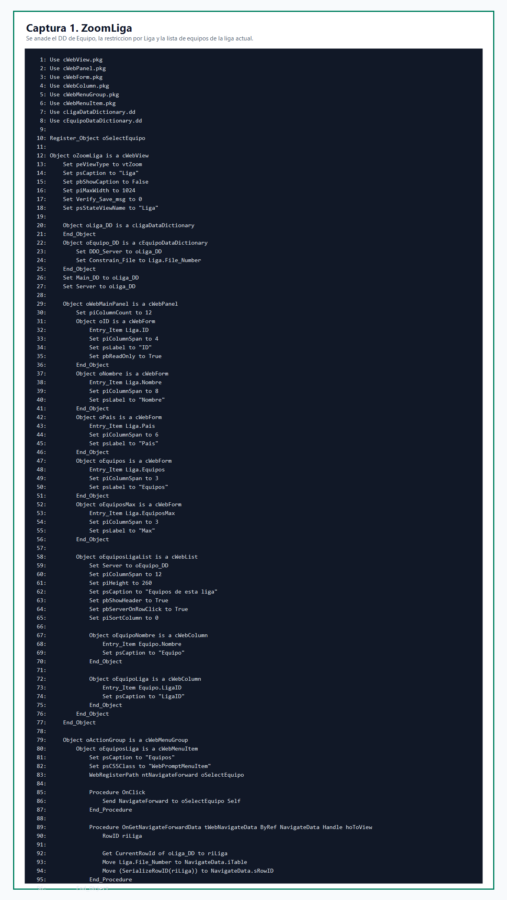
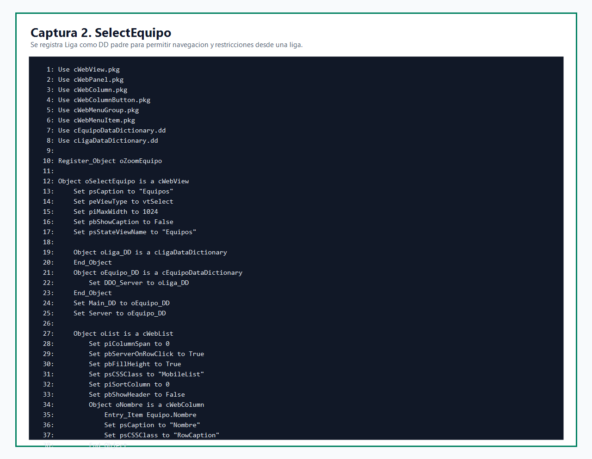
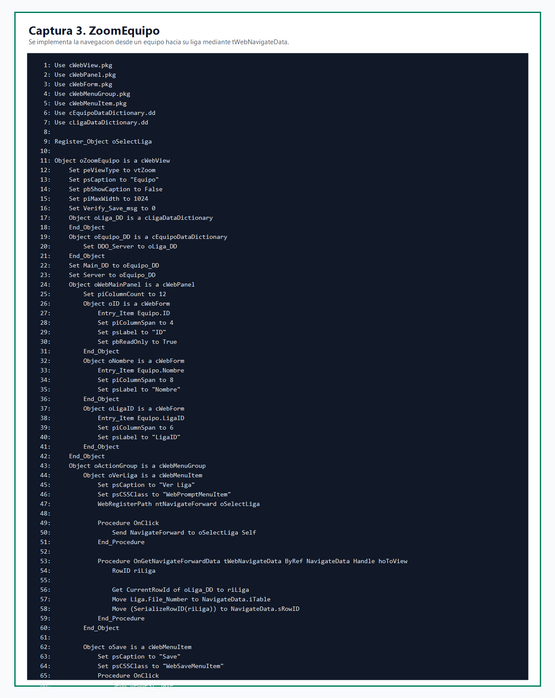
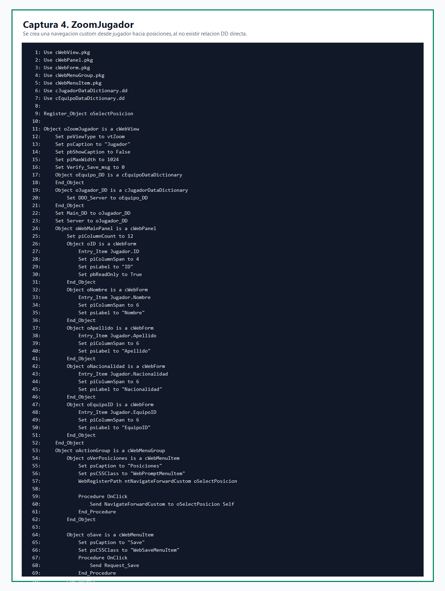
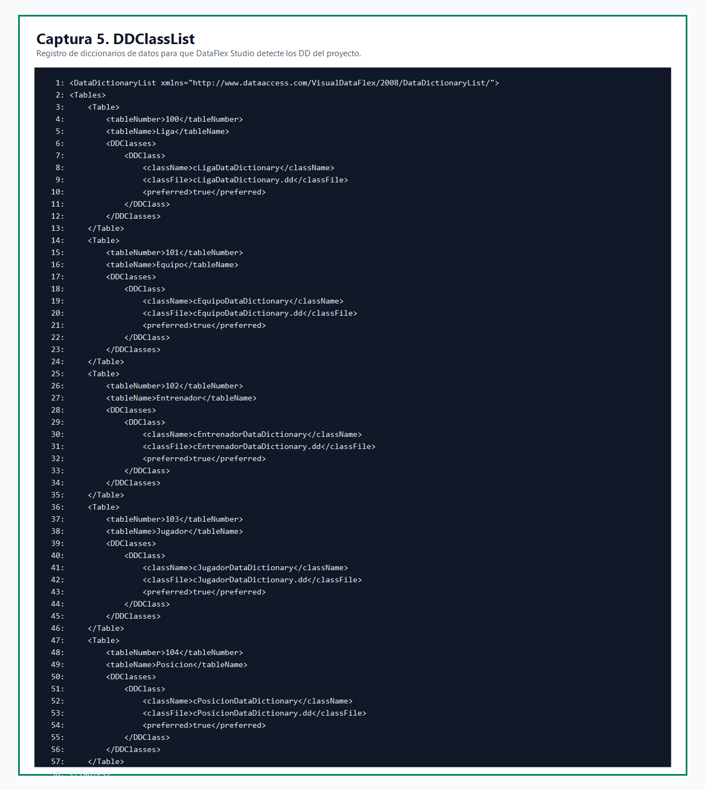
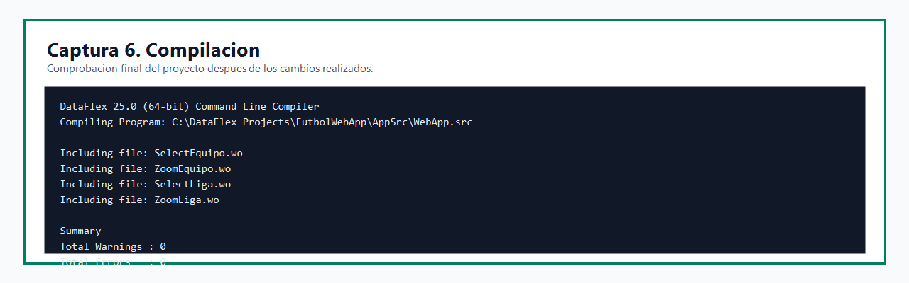

Práctica de navegación en DataFlex
1. Introducción
En esta práctica se ha trabajado sobre el proyecto FutbolWebApp, una aplicación web desarrollada con DataFlex. El objetivo principal ha sido implementar y documentar distintos casos de navegación entre vistas Select y Zoom, utilizando los mecanismos propios de DataFlex: NavigateForward, NavigateForwardCustom, WebRegisterPath y la estructura tWebNavigateData.
También se ha corregido la configuración del proyecto para que DataFlex Studio reconozca correctamente los diccionarios de datos y la conexión a base de datos.
2. Objetivos de la práctica
- Revisar los participantes que intervienen en una navegación.
- Implementar navegaciones entre las vistas de Liga, Equipo, Jugador y Posicion.
- Usar
tWebNavigateDatapara enviar información entre vistas. - Añadir una relación padre-hijo entre Liga y Equipo.
- Registrar los diccionarios de datos del proyecto.
- Verificar que el proyecto compila sin errores.
3. Desarrollo realizado
3.1. Navegación desde Liga hacia Equipos
En la vista ZoomLiga.wo se añadió el diccionario de datos de Equipo como hijo de Liga. Para ello se declaró oEquipo_DD, se enlazó con oLiga_DD mediante DDO_Server y se aplicó Constrain_File para limitar los equipos mostrados a la liga actual.
Además, se añadió una lista dentro del propio zoom de liga para visualizar directamente los equipos pertenecientes a la liga abierta.

3.2. Preparación de SelectEquipo como vista hija
En SelectEquipo.wo se añadió el DD de Liga para que Equipo pueda comportarse correctamente como tabla hija. Con esta modificación, la vista puede recibir una navegación desde una liga y mostrar únicamente los equipos relacionados.

3.3. Navegación desde Equipo hacia Liga
En ZoomEquipo.wo se implementó el botón Ver Liga. Este botón permite navegar desde el zoom de un equipo hacia la vista de selección de ligas. Para realizarlo se obtiene el RowId de la liga actual y se asigna a NavigateData.sRowID.

3.4. Navegación custom desde Jugador hacia Posiciones
En ZoomJugador.wo se añadió el botón Posiciones. En este caso se utiliza NavigateForwardCustom, porque en el proyecto no existe una relación directa entre los DD de Jugador y Posicion.

3.5. Registro de diccionarios de datos
Al abrir el proyecto en DataFlex Studio aparecía el aviso de que no había diccionarios de datos definidos. Para solucionarlo se creó el archivo DDSrc/DDClassList.xml, donde se registran los DD principales del proyecto.

3.6. Conexión administrada a base de datos
También se añadió una conexión administrada llamada FutbolDB en Data/DFConnId.ini. Después se actualizaron los archivos .int para usar una conexión administrada.
SERVER_NAME DFCONNID=FutbolDB
4. Orden de eventos de navegación
- Se ejecuta el
OnClickdel botón, menú o lista que inicia la navegación. - Se llama a
NavigateForward,NavigateForwardCustomoNavigatePath. - DataFlex determina el tipo de navegación:
nfFromMain,nfFromParent,nfFromChildonfUndefined. - El objeto invocador rellena los datos mediante
GetNavigateForwardData. - Se puede personalizar la información en
OnGetNavigateForwardData. - La vista destino recibe la navegación y aplica restricciones o búsquedas.
- Se ejecutan los eventos de visualización de la vista cuando correspondan.
5. Verificación
Después de realizar los cambios, se compiló el proyecto con el compilador de DataFlex 25.0. El resultado fue correcto, sin errores ni avisos.

6. Conclusión
La práctica ha permitido aplicar los conceptos principales de navegación en una aplicación web DataFlex. Se han implementado casos de navegación entre vistas relacionadas, se ha usado tWebNavigateData para transportar información entre vistas y se ha corregido la configuración del entorno para que DataFlex Studio reconozca los diccionarios de datos del proyecto.
El resultado final es un proyecto que compila correctamente y que refleja los casos pedidos en la práctica.